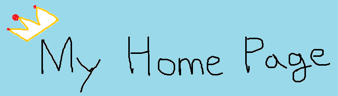

내 장단점 및 mbti
ㅣ
취미
ㅣ
웹 배운내용
볼링
볼링을 고등학생때부터 쳤었다. 너무 재미있다. 평균은 160정도나온다.
탁구
탁구는 어릴때 많이 쳤엇다가 군대가서도 치다보니 가끔씩 생각난다. 그래도 조금은 할수있다고 말할수있다.
농구
농구는 키크고싶어서 중1~중3때까지 열심히 했지만 지금은 안하고있다. 기회가 되면 하고싶다.
기부스토리
빛나는 미래의 시작